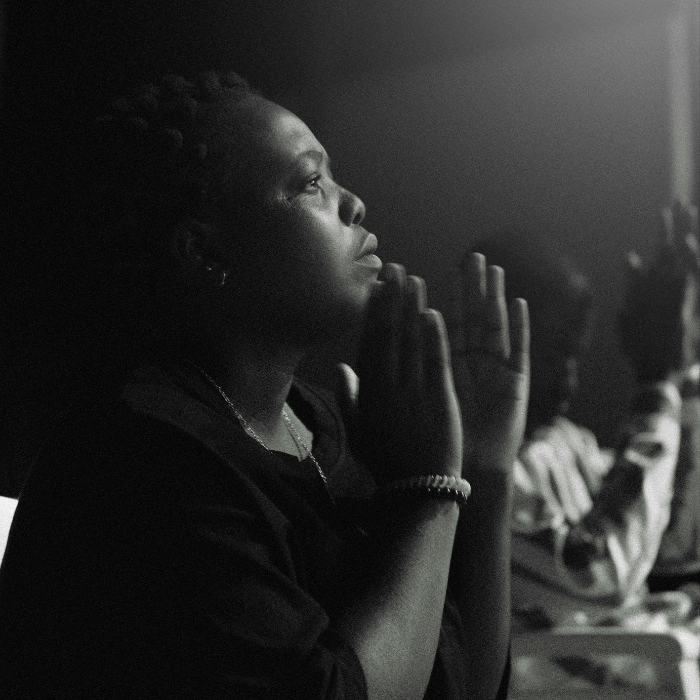
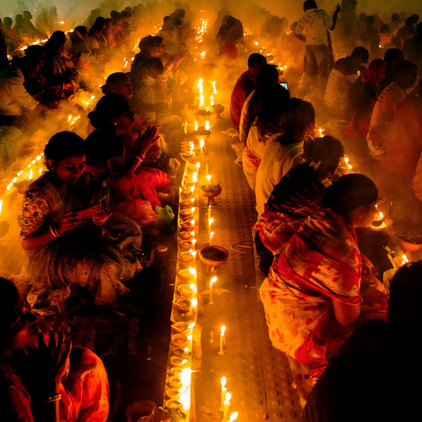

"O que é verdade? A ciência busca provas, a fé busca sentidos. No entanto, o confronto entre as duas pode parecer implacável. A Bíblia oferece respostas que acalmam a alma, enquanto a ciência desvela mistérios do universo. Será que é possível viver em harmonia com ambos? Ou precisamos escolher entre a razão e o sobrenatural? Descubra as evidências, as refutações e tire suas próprias conclusões."
Por que a maioria das culturas acredita em algum tipo de divindade?
Resposta
A universalidade das crenças religiosas pode sugerir uma necessidade humana inata por significado e conexão com algo maior.
Fonte: "The World's Religions" de Huston Smith.

Como o conceito de Deus se relaciona com a moralidade humana?
Resposta
Muitos argumentam que uma moralidade objetiva requer uma fonte transcendente, enquanto outros sustentam que uma moralidade pode surgir de normas sociais e evolutivas.
Fonte: "Deus e Moralidade: Uma História Filosófica" de David Baggett e Jerry L. Walls.

Que evidências científicas existem para apoiar ou refutar a existência de Deus?
Resposta
A discussão envolve a interpretação de eventos como o Big Bang, a evolução e a complexidade da vida.
Fonte: "The God Delusion" de Richard Dawkins e "The Language of God" de Francis Collins.
Como explicar a existência do mal e do sofrimento se um Deus benevolente existe?
Resposta
O dilema do mal desafia a ideia de um Deus onipotente e benevolente, conduzindo a diferentes abordagens teológicas e filosóficas.
Ao longo dos séculos, a humanidade sempre buscou respostas para questões fundamentais sobre a origem do universo, o propósito da vida e a natureza da existência. Esse confronto entre a visão espiritual, representada pela Bíblia, e o conhecimento científico, tem acompanhado o desenvolvimento da civilização. Em muitos momentos, a ciência e a religião tentaram desvendar os mesmos mistérios, mas através de lentes diferentes. A ciência oferece explicações baseadas em observação e experimentação, enquanto a religião oferece sentido e propósito que falam ao coração e à fé. No entanto, mesmo com tantos avanços e descobertas, ainda não conseguimos responder a todas as perguntas. Talvez algumas coisas simplesmente não possam ser completamente explicadas, restando espaço para a dúvida, o mistério e o confronto contínuo entre razão e fé.
Contato
Instituições que Estudei
Olá! Meu nome é Peterson, tenho 34 anos e sou um estudante apaixonado por tecnologia. Este site é mais do que um projeto; é uma jornada para aprimorar meu conhecimento em programação web e, ao mesmo tempo, um espaço para reflexão sobre uma questão fundamental: em quem ou não que você realmente acredita? Vivemos em um mundo onde as conversas são tão diversas quanto as pessoas que o habitam. Muitos colocam sua fé no dinheiro, acreditando que ele pode resolver todos os problemas. Outros investem nas pessoas, nas instituições ou até mesmo no governo, esperando que elas tenham todas as respostas. Há ainda aqueles que se apegaram à ideia de milagres, buscando sinais divinos em momentos de desespero. No entanto, existe um grupo especial de pessoas que vai além desses superficiais. Eles realmente seguem os mandamentos e vivem em comunhão com um Deus vivo, que se manifesta em todos os momentos de suas vidas. Para esses indivíduos, Deus não é uma figura distante ou um conceito abstrato. Ele é uma presença real, sentida em cada passo do caminho, mesmo que não tenha uma face. É como se Ele estivesse sempre ao nosso lado, nos dando as mãos, guiando-nos através das dificuldades e iluminando nosso caminho. Neste espaço, quero convidar você a refletir sobre suas próprias opiniões. O que você realmente considera sagrado? Quais são os pilares que sustentam sua vida? Através de perguntas provocativas e evidências que encontramos na natureza e no sobrenatural, espero estimular um diálogo que nos ajude a entender melhor a nós mesmos e ao mundo ao nosso redor. Venha comigo nessa exploração e juntos vamos desvendar os mistérios da fé e da existência.